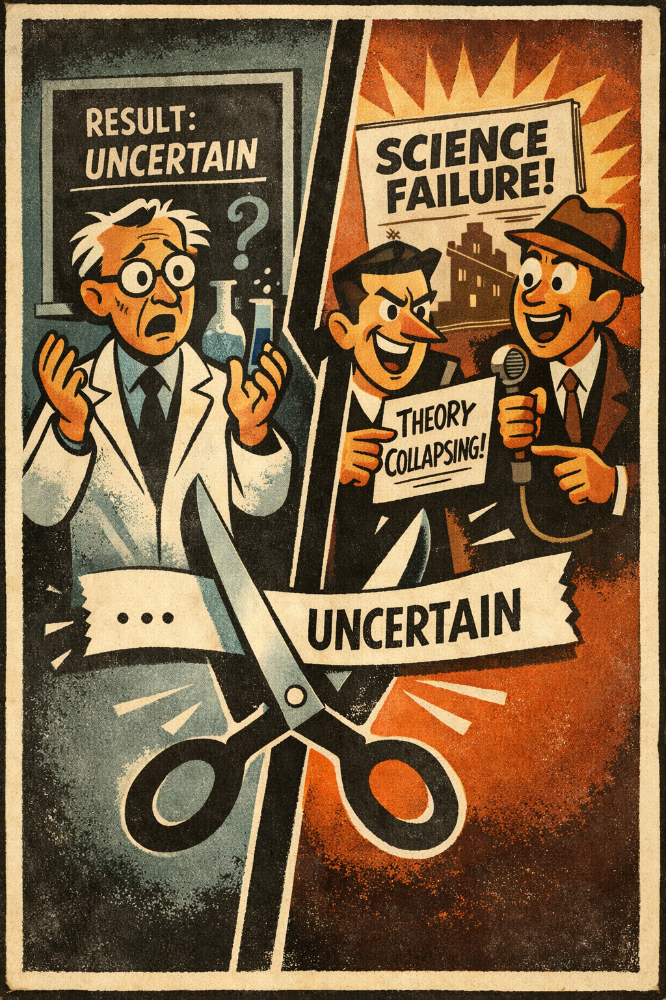
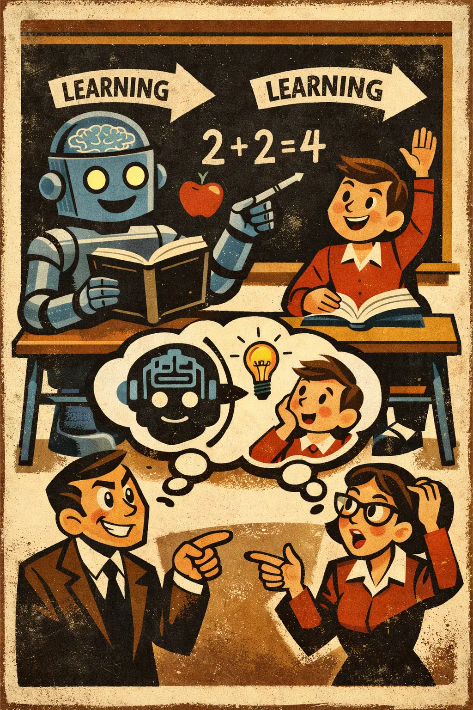
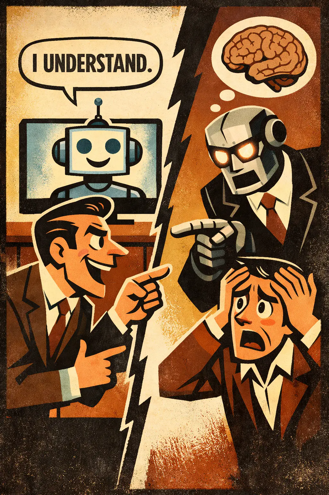
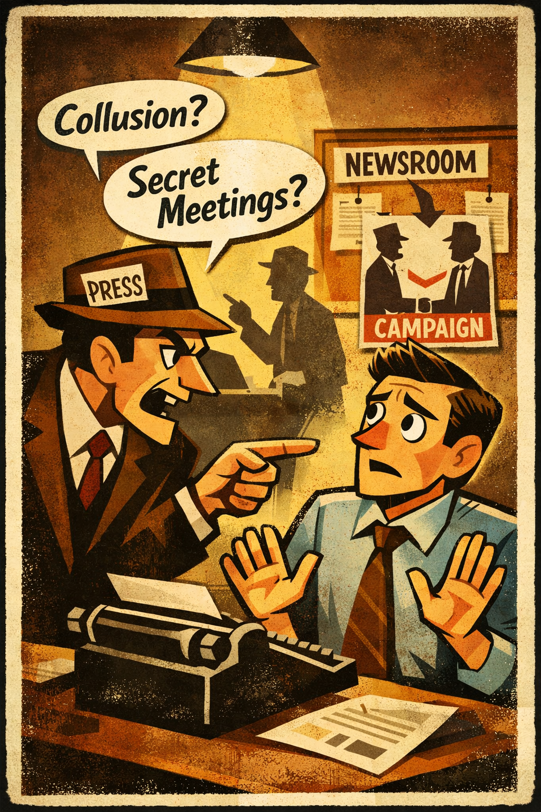
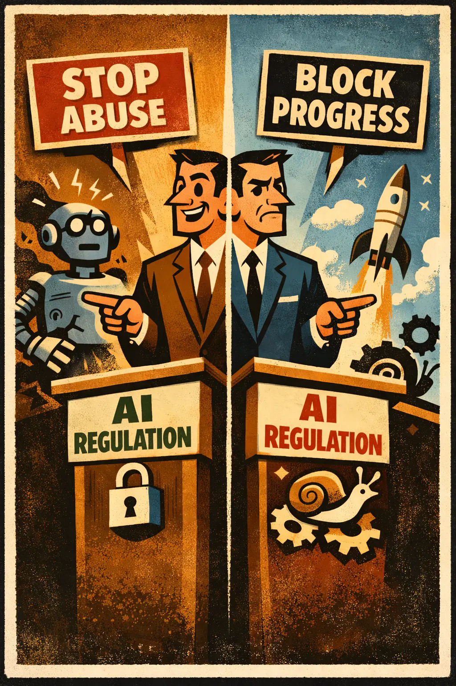
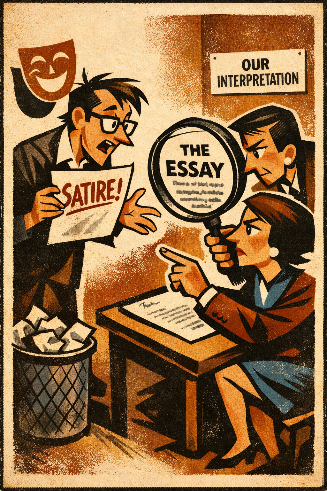
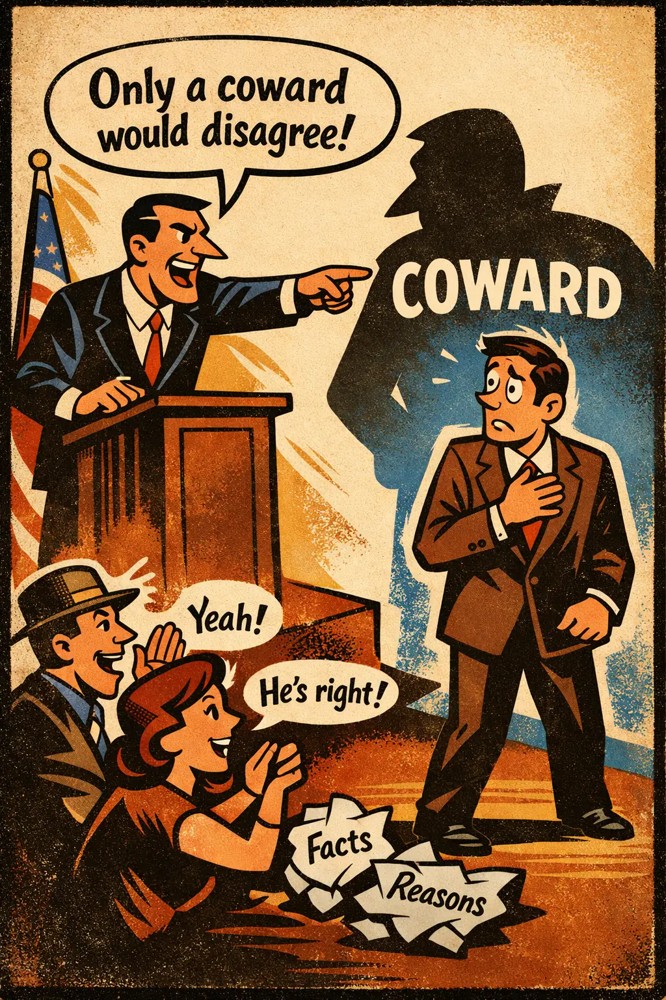
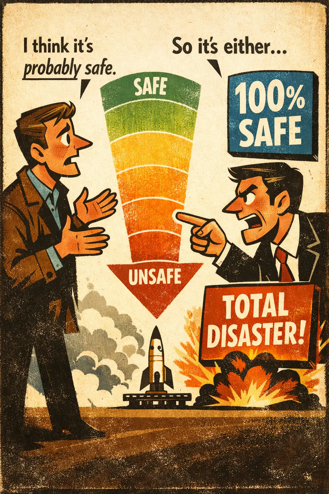
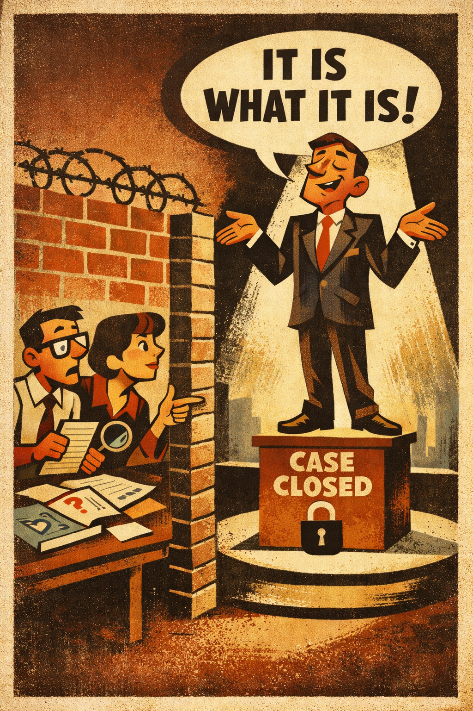
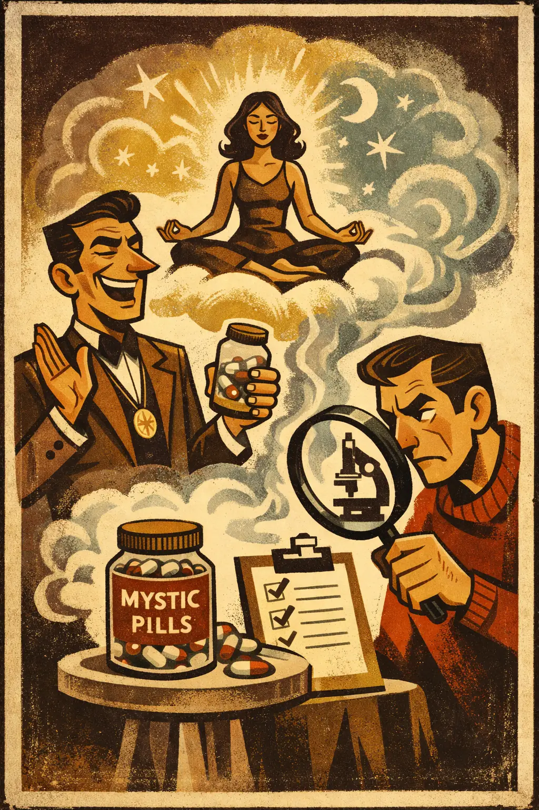

Contextomy
Occurs when words are selectively excerpted from their original context in a way that changes or distorts what the speaker meant.
TacticalLinguistic
Intermediate
Intro college

Logical Fallacies
A practical logical-fallacies reference with clear explanations, usable examples, and teaching tools.
Family
The problem is driven by wording, ambiguity, definitions, or verbal framing rather than sound reasoning.
Occurs when words are selectively excerpted from their original context in a way that changes or distorts what the speaker meant.

Occurs when a substantive question is illegitimately 'solved' by defining one contested concept into another.

Occurs when a key word or phrase slides between different meanings inside the same argument, creating the illusion of support.

Occurs when a broad or harmless sense of a word is used to insinuate a narrower, stronger, or more loaded sense of the same word.

Occurs when a word's original or historical meaning is treated as if it controlled the word's present meaning.

Occurs when a question smuggles in one or more assumptions that have not been established, then pressures the listener to answer as if those assumptions were already sett...

Occurs when someone uses strategically shifting language that seems to support both sides by quietly changing the meaning of the key term to suit the audience.

Occurs when the creator's intended meaning is treated as irrelevant in contexts where that intention is actually important to understanding the work or statement.

Occurs when pejorative, loaded, or insulting language is used to steer judgment in place of actual support for the conclusion.

Occurs when someone advances a bold, controversial claim, retreats under criticism to a weaker and easier-to-defend claim, and then returns to the stronger claim as if th...

Occurs when someone protects a generalization from counterexamples by redefining the group with an ad hoc 'real' or 'true' membership test.

Occurs when a claim is protected by an avalanche of words, side points, jargon, or branching assertions that overwhelm reasonable scrutiny and create the illusion of dept...

Occurs when a fuzzy, graded, or probabilistic position is forced into unnaturally sharp categories so it becomes easier to attack.

Occurs when one term in a meaningful contrast is redefined so broadly or so narrowly that its opposing term can no longer do any work.

Occurs when a familiar slogan or stock phrase is used to stop inquiry, deflect scrutiny, or create the feeling that an issue has already been settled.

Occurs when vague, elastic, or undefined terms are chosen so that a position sounds meaningful while resisting clear testing or criticism.
